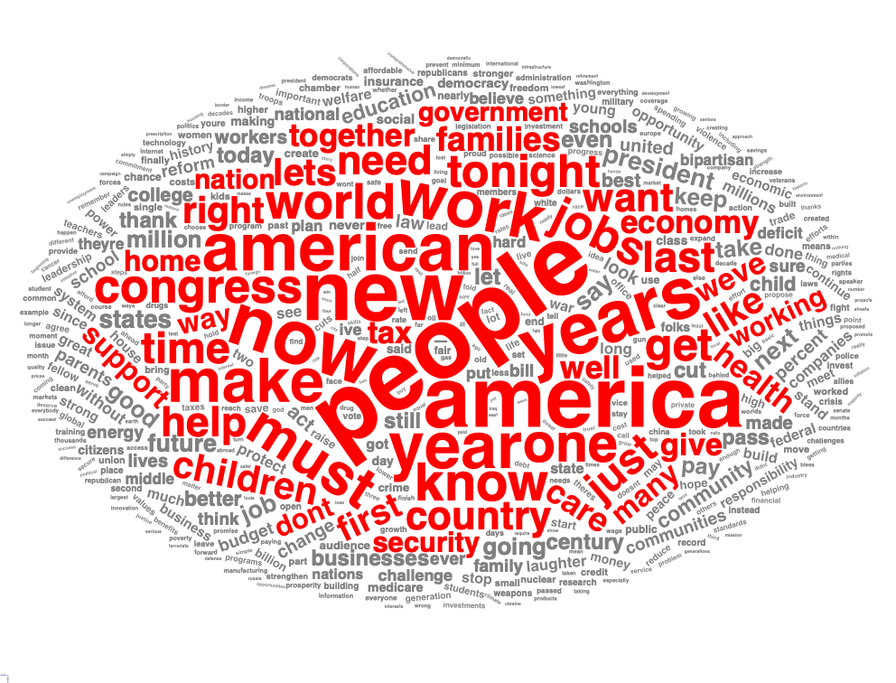

# library
library(tm)Loading required package: NLPlibrary(wordcloud) Loading required package: RColorBrewerlibrary(readtext)
library(wordcloud2)
library(htmlwidgets)
library(webshot)# library
library(tm)Loading required package: NLPlibrary(wordcloud) Loading required package: RColorBrewerlibrary(readtext)
library(wordcloud2)
library(htmlwidgets)
library(webshot)# load the files
setwd("~/Desktop/text-analysis/State of the union")
democrat <- readtext("Democrat.docx")
republic <- readtext("Republican.docx")# cleaning the files
preprocess_text <- function(text) {
corpus <- Corpus(VectorSource(text))
corpus <- tm_map(corpus, content_transformer(tolower)) # Convert to lowercase
corpus <- tm_map(corpus, removePunctuation) # Remove punctuation
corpus <- tm_map(corpus, removeNumbers) # Remove numbers
custom_stopwords <- c(stopwords("english"), "already", "also", "cant", "can", "and", "able", "ago", "away", "across", "ask", "around", "another", "americas", "come", "back", "almost", "came", "applause", "become", "became", "always", "begin")
corpus <- tm_map(corpus, removeWords, custom_stopwords) # Remove stopwords
return(corpus)
}
# Preprocess both texts
democrat_corpus <- preprocess_text(democrat)
republic_corpus <- preprocess_text(republic)# create matrix
democrat_tdm <- TermDocumentMatrix(democrat_corpus)
republic_tdm <- TermDocumentMatrix(republic_corpus)
# Convert to matrix and calculate word frequencies
democrat_matrix <- as.matrix(democrat_tdm)
republic_matrix <- as.matrix(republic_tdm)
democrat_freq <- sort(rowSums(democrat_matrix))
republic_freq <- sort(rowSums(republic_matrix))# For Republican
# Combine word frequencies into a dataframe
combined_words_rep <- names(republic_freq)
combined_freq_rep <- republic_freq
word_data_rep <- data.frame(
word = combined_words_rep,
freq = combined_freq_rep
)
# Aggregate frequencies for duplicate words (optional if no duplicates)
word_data_rep <- aggregate(freq ~ word, data = word_data_rep, sum)
# Generate a color gradient for less frequent words
gradient_colors <- colorRampPalette(c("lightgrey", "red"))(nrow(word_data_rep))
# Generate the circular wordcloud
wordcloud2(
word_data_rep,
size = 1, # Adjust size for the wordcloud
shape = "triangle", # Use circular layout
)# Preprocessing Function
preprocess_text <- function(text) {
corpus <- Corpus(VectorSource(text))
corpus <- tm_map(corpus, content_transformer(tolower)) # Convert to lowercase
corpus <- tm_map(corpus, removePunctuation) # Remove punctuation
corpus <- tm_map(corpus, removeNumbers) # Remove numbers
corpus <- tm_map(corpus, stripWhitespace) # Remove extra whitespace
custom_stopwords <- c(
stopwords ("english"), "already", "also", "cant", "can",
"and", "able", "ago", "away", "across", "ask", "around",
"another", "americas", "come", "back", "almost", "came",
"applause", "become", "became", "always", "begin", "americans", "will", "every", "thats")
corpus <- tm_map(corpus, removeWords, custom_stopwords) # Remove stopwords
return(corpus)
}
# Preprocess both texts
democrat_corpus <- preprocess_text(democrat)
republic_corpus <- preprocess_text(republic)
# Preprocess the text data
democrat_corpus <- preprocess_text(democrat)
# Create Term-Document Matrix
democrat_tdm <- TermDocumentMatrix(democrat_corpus)
democrat_matrix <- as.matrix(democrat_tdm)
# Calculate word frequencies
democrat_freq <- sort(rowSums(democrat_matrix), decreasing = TRUE)
# Create a dataframe of words and their frequencies
word_data <- data.frame(
word = names(democrat_freq),
freq = democrat_freq,
stringsAsFactors = FALSE
)
# Filter words with a minimum frequency of 20
word_data <- subset(word_data, freq >= 25)
# Define the frequency threshold (top 20% of frequent words)
threshold <- quantile(word_data$freq, 0.91)
# Assign colors explicitly based on frequency
word_data$color <- ifelse(
word_data$freq >= threshold,
"red", # Highlight frequent words
"grey" # Fade less frequent words
)
# Generate wordcloud with custom colors
wc <- wordcloud2(
word_data,
size = 0.6,
shape = "circle",
color = word_data$color # Pass the color vector
)
# Save wordcloud as HTML and PNG
saveWidget(wc, "wordcloud.html", selfcontained = T)
webshot::webshot("wordcloud.html", file = "wordcloud2.png", delay = 5)
# Load required libraries
library(tm)
library(wordcloud)
# Preprocessing Function
preprocess_text <- function(text) {
corpus <- Corpus(VectorSource(text))
corpus <- tm_map(corpus, content_transformer(tolower)) # Convert to lowercase
corpus <- tm_map(corpus, removePunctuation) # Remove punctuation
corpus <- tm_map(corpus, removeNumbers) # Remove numbers
corpus <- tm_map(corpus, stripWhitespace) # Remove extra whitespace
custom_stopwords <- c(
stopwords("english"), "already", "also", "cant", "can",
"and", "able", "ago", "away", "across", "ask", "around",
"another", "americas", "come", "back", "almost", "came",
"applause", "become", "became", "always", "begin", "americans", "will", "every", "thats"
)
corpus <- tm_map(corpus, removeWords, custom_stopwords) # Remove stopwords
return(corpus)
}
# Preprocess the text data
democrat_corpus <- preprocess_text(democrat)
# Create Term-Document Matrix
democrat_tdm <- TermDocumentMatrix(democrat_corpus)
democrat_matrix <- as.matrix(democrat_tdm)
# Calculate word frequencies
democrat_freq <- sort(rowSums(democrat_matrix), decreasing = TRUE)
png("wordcloud.png", width = 800, height = 800) # Save as PNG
wordcloud(
words = names(democrat_freq), # Words
freq = democrat_freq, # Frequencies
min.freq = 30, # Minimum frequency to display
scale = c(6, 0.7), # Adjust size of largest and smallest words
random.order = FALSE, # Arrange by frequency
colors = brewer.pal(5, "Dark2") # Color palette
)